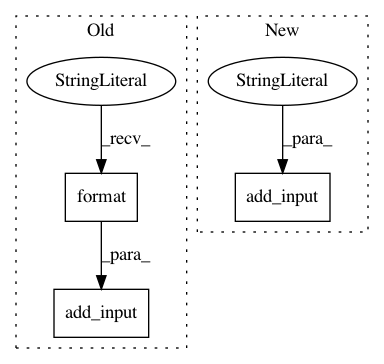

9aa69e2e14a75962faaf352b639c9daf53fc2222,python/tvm/contrib/target/onnx.py,Reshape,convert,#Any#Any#Any#Any#,109
Before Change
shape = numpy.asarray([a.value for a in node_entry["relay_node"].attrs.newshape],
dtype=numpy.int64)
input_name = "shape{}".format(node_entry["name"])
node = onnx.helper.make_node(cls.__name__, [node_entry["input_names"][0], input_name],
node_entry["output_names"])
model_container.add_nodes([node])
add_input(shape, input_name, model_container)
class Conv(OpConverter):
Operator converter for Conv.
After Change
dtype=numpy.int64)
input_names = [node_entry["input_names"][0],
add_input(shape, name, "shape", model_container)]
node = onnx.helper.make_node(cls.__name__, input_names,
node_entry["output_names"])
In pattern: SUPERPATTERN
Frequency: 3
Non-data size: 3
Instances
Project Name: apache/incubator-tvm
Commit Name: 9aa69e2e14a75962faaf352b639c9daf53fc2222
Time: 2020-09-05
Author: zhoxingy@amazon.com
File Name: python/tvm/contrib/target/onnx.py
Class Name: Reshape
Method Name: convert
Project Name: apache/incubator-tvm
Commit Name: 9aa69e2e14a75962faaf352b639c9daf53fc2222
Time: 2020-09-05
Author: zhoxingy@amazon.com
File Name: python/tvm/contrib/target/onnx.py
Class Name: Pad
Method Name: convert
Project Name: apache/incubator-tvm
Commit Name: 9aa69e2e14a75962faaf352b639c9daf53fc2222
Time: 2020-09-05
Author: zhoxingy@amazon.com
File Name: python/tvm/contrib/target/onnx.py
Class Name: ConstantOfShapeZeros
Method Name: convert